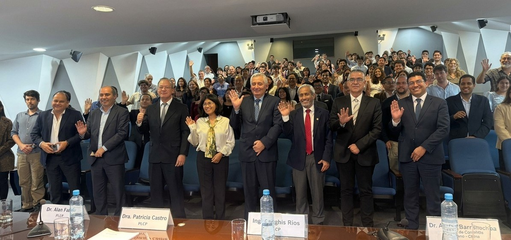

55.º aniversario de las relaciones diplomáticas entre Perú y China
El miércoles 4 de noviembre de 2026 se realizó en el campus de la PUCP el diálogo académico sobre las relaciones bilaterales y sus perspectivas, organizado por la PUCP, la Red Peruana para Estudios del Asia-Pacífico (REDAP) y APEC Ciudadano, con representantes del ámbito académico, diplomático y empresarial.